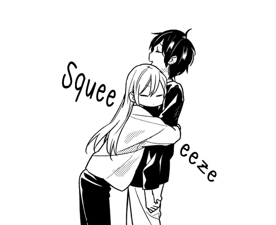

🏠Home📘Blog
Stop thinking you hurt me Анна, all i wanted is a second chance if i messed it up or at least know the truth,
but i just realised that i know nothing, you said me that you have broke a lot of hearts, i don't care how many people did you hurt,
even if you hurted me, we all hurt people in someway, in relationships both sides hurt each other,
what really matters is how you improve after all, i still love you so much, i just want a chance to be with you,
a chance to start again without lies, cry together and forgive our mistakes, sorry for my corny dream,
i'm sorry if i'm not enough, sorry for being slow, i just needed words of encouragement from you and i also wanted
to support you as i can, i want to believe that you have a reason to do what your doing and someday you will comeback,
since here i send you all my energies, ganbatte!~💚
